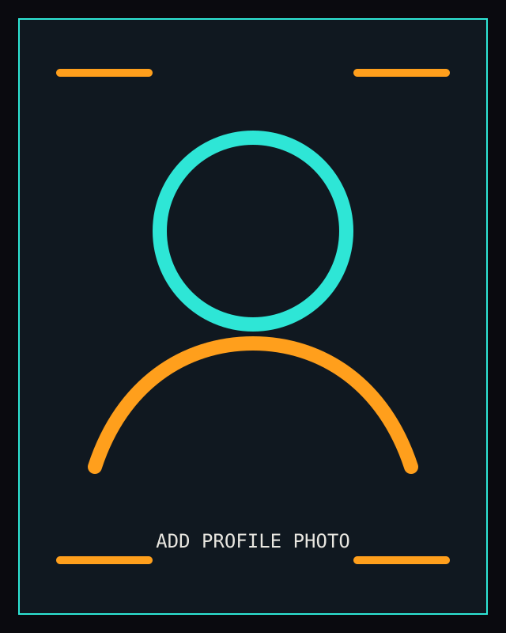

Personnel file
About

assets/profile.jpgEngineering focus
I'm an Aerospace Engineering student at Texas A&M focused on flight software, guidance/navigation/control, autonomy, and verification systems. I build projects that combine aerospace theory with executable software: command/telemetry links, estimation pipelines, watchdog logic, hardware-in-the-loop runs, and repeatable evidence capture.
My current flagship project is AstraSim-FSW, a C++17/Python flight-software-in-the-loop verification framework with Raspberry Pi HIL evidence. I also work on GPS-denied navigation through GHOST, a vision/IMU state-estimation pipeline for autonomous platforms.
I am looking for engineering roles where I can contribute to embedded aerospace software, GNC tools, autonomy systems, test infrastructure, simulation, and hardware-in-the-loop verification.
How I work
- I prefer projects with measurable evidence: tests, logs, plots, traces, and reproducible procedures.
- I care about the interface between software and physical systems: packet formats, timing, fault handling, and observability.
- I use side projects to build the engineering habits expected in flight and autonomy work: verification, documentation, and disciplined iteration.
Education
Texas A&M University
BS Aerospace Engineering — May 2027
Texas A&M University
MS Aerospace Engineering — Fast Track, in progress
Interests
- Flight software and embedded verification
- Guidance, navigation, control, and estimation
- GPS-denied autonomy and sensor fusion
- Spacecraft systems, mission operations, and human spaceflight
- Hardware-in-the-loop testing and technical visualization